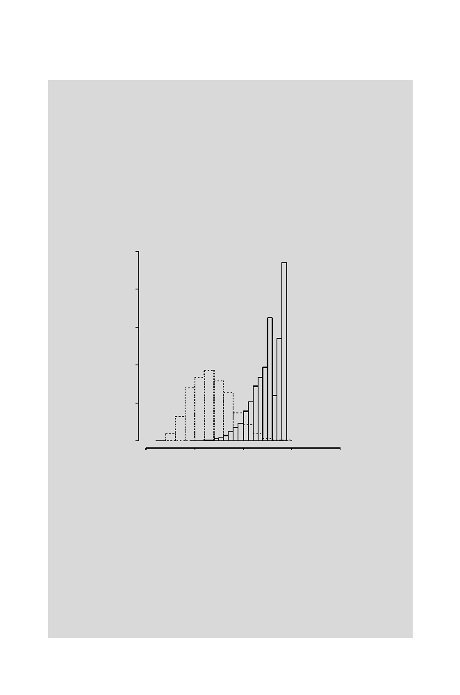

9.6 Using Scores for Classification
257
> hist(back.sim.score, prob=T,xlim=c(20,20),
+ ylim=c(0,0.25),lty=2)
> hist(gata.motifs.score, xlim=c(-20,20),
+ prob=T,lty=1,add=T)
The distribution of the background scores (Fig. 9.8, broken lines) is more
nearly symmetric, and the mean is at
−
6
.
56. In Computational Example 9.2,
we asked what we might have expected the mean score for the background
distribution to be. In particular, why is it not 0? The answer comes from
looking at
tmp$log2pwm
: 16 of the 24 matrix elements are negative, and their
average value is
−
2
.
32. Eight of the 24 matrix elements are positive, and their
average value is 1.14. The iid sites draw more of their positional scores
s
i
from
the negative values.
Scores
Density
-20 -10 0 10 20
0.00 0.05 0.10 0.15 0.20 0.25
Fig. 9.8.
Score distributions for GATA-1 sites (solid lines) simulated from the PWM
corresponding to sites in Table 9.3 (scores shown in Fig. 9.3) and for “background”
sequences (broken lines) simulated from an iid model using the base composition of
human DNA.
Now we can examine the false positive and false negative error rates.
To do this, we specify a set of cutoffs from
−
10 to +8 (encompassing
most of the scores in
gata.motifs.score
) and calculate the fraction of
gata.motifs.score
values
below
the cutoff (false negative) and the fraction
of
back.sim.score
values
above
the cutoff (false positive).
cutoffs<-c(-10:8)
false.neg<-rep(0,19)
#Vector to hold calculated values